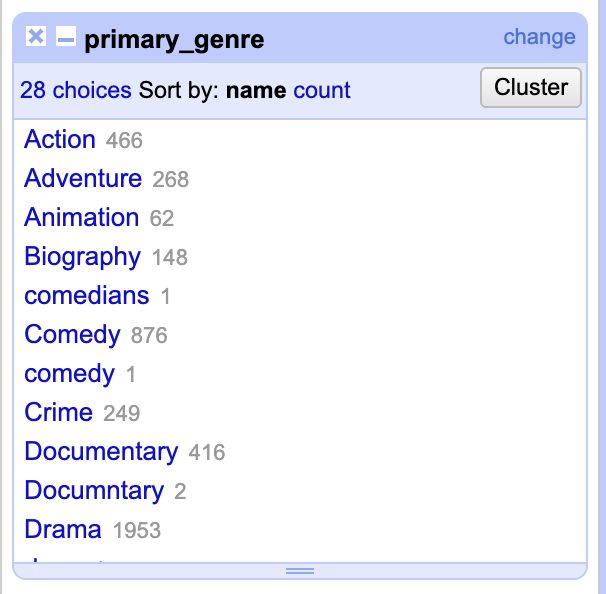
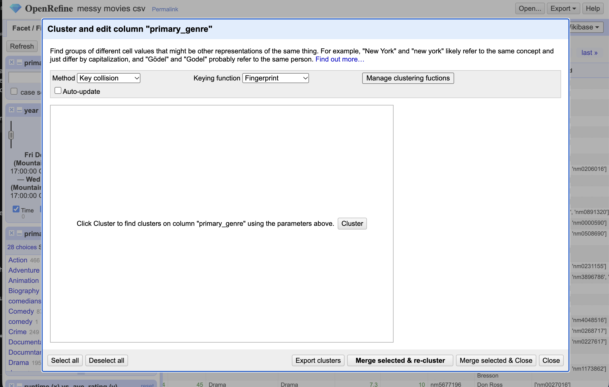
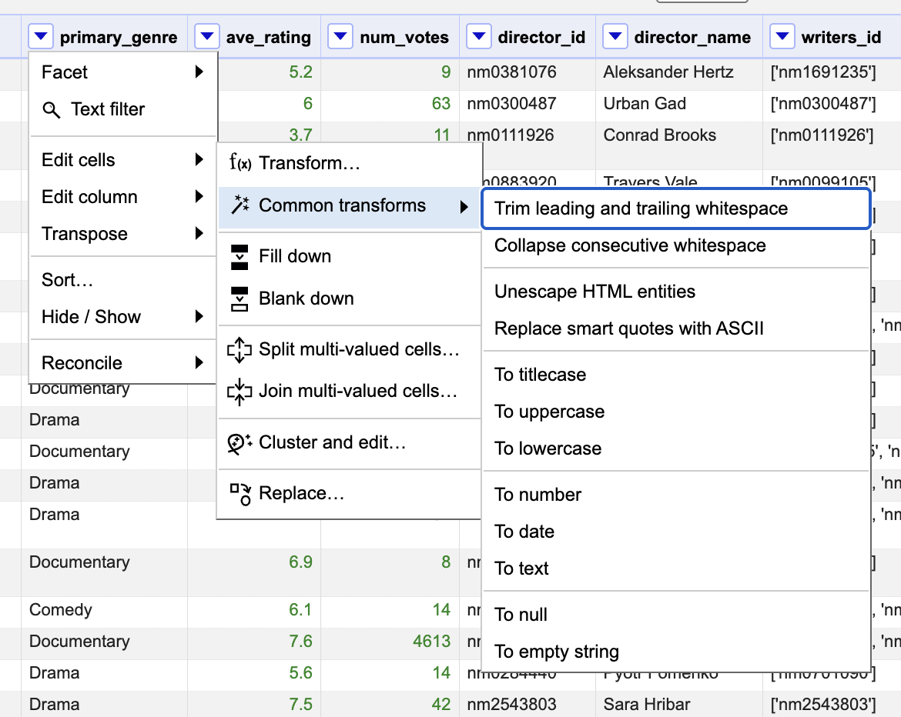
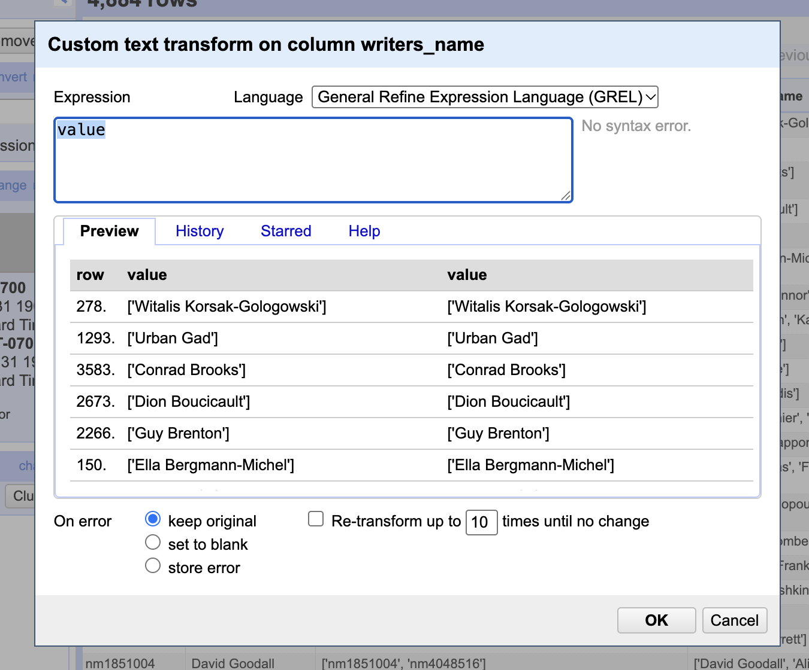

Clusters and Transformations
In addition to the facetting, filtering, and sorting tools we've covered, you can also use OpenRefine's built-in clustering methods and transformation tools to inspect and clean your data. Clustering and transformation tools both let you change potentially large amounts of data all at once.
Clustering
Clustering refers to the process of finding groups of values that could be alternative representations of the same thing; for example, “New York” and “new york”, or “Gödel” and “Godel.” Because of this, clustering is a great way to identify and clean misspelled or mistyped entries in your data.
OpenRefine has a number of built-in clustering algorithms - feel free to play around with them and see what kinds of clusters come up. Broadly speaking, they offer two categories of clustering methods: token-based (key collision, n-gram...) and character-based (Levenshtein distance, PPM...). The fingerprinting method, a key collision method, is the least likely to produce a false positive, and so is the default clustering method in OpenRefine.
You can access the clustering function by clicking the button Cluster in the top right hand corner of the facet box.

In the primary_genre text facet we created earlier, click the Cluster button. A pop-up window will appear. Towards the top of the window, you will find dropdown menus for the clustering method and keying function; for this exercise, we will start by using the default (Key collision and Fingerprint, respectively) but feel free to try different combinations and see if different clusters emerge later on.

Click on the Cluster button in the middle of the window. You should see three pairds of genre titles appear:
- Drma <--> drma
- Sci-Fi <-> sci-fi
- Comedy <-> comedy
Select all the clustered pairs and press the Merge selected & re-cluster button. It should not return anymore clusters.
Note
You'll notice that you can correct the new cell value in the same step as merging; for example, you could both merge 'Drma' and 'drma' and correct their new value to 'Drama'. We are not going to do that this time, however, to get a bit more practice with clustering :)
Now, trying using different keying function and clustering method options. What other clusters appear, if any?
Solution
The combination of Key collision and Metaphone3 should return the following cluster:
- Drama <-> Drma
Go ahead and merge these as Drama.
Close the clustering window. Now you should see that your primary_genre facet only has 23 options. Scroll through it - are there any errors that we did not catch with the clustering methods?
Solution
The various clustering functions will likely not have caught the following errors:
- comedians
- science fiction
These are two far away from the other genre titles, even though they refer to the same thing, and so won't be grouped in the clustering functions. These will have to be edited manually in the text facet box. Edit these entries as Comedy and Sci-Fi, respectively.
Transforming
Transforming data can also be a quick way to correct improperly formatted data all at once. OpenRefine includes a set of common transformations that you can use, and also allows for custom transformations. We've already encountered transformations that change data types, but there are also transformations that trim leading and trailing whitespace, or change the case of text. You can also write your own custom transformations.

Trimming leading and trailing whitespace
One common use for transformations is to trim leading and trailing whitespaces. These are unnecessary, often accidental, spaces on either side of the text data in a cell. To access this transformation function, you'll need to:
- Open the drop down menu beside the column title;
- Hover over
Edit cells; - Hover over
Common transforms; - Click on
Trim leading and trailing whitespace.
Try it now on the movie_title column. You should get a pop-up message confirming that you've changed 62 rows of data.
Go through the other columns of text data and make sure that there is no trailing or leading whitepace.
Custom transformations
We can also write our own transformations to edit large amounts of data easily. Let's try that now to turn our sets of writer IDs and names into simple and clean lists. To do this, we'll need to remove the square brackets and quotation marks around the ID numbers and names.
Start by clicking the down arrow beside the writer_names variable title. Choose Edit cells and then Transform. This will open a pop up window for custom transformation.

This window contains a text box, where you can type a General Refine Expression Language (GREL) and use it to transform your data.
Our first step will be to remove all the square brackets. For this, type value.replace("[","") and click ok. This GREL expression is telling OpenRefine to take every "[" and replace it with "" (nothing). Helpfully, OpenRefine gives you a preview of the effect of your transformation on this
Use this same technique to remove the other square brackets (]) and the quotation marks (').
Solution
You should use the following GREL expressions:
- value.replace("]","")
- value.replace("'","")
After completing these two transformation, each row of writers' names should be a clean list, without any square brackets or quotation marks.
We can also string these three replacement functions together, like so value.replace(XX).replace(XX)... and so on.
Try removing the single quotation marks and the square brackets from the writers_id values in one transformation.
Solution
Open a custom transform window on the writers_id column and type in the following transformation expression:
value.replace("[","").replace("]","").replace("'","")